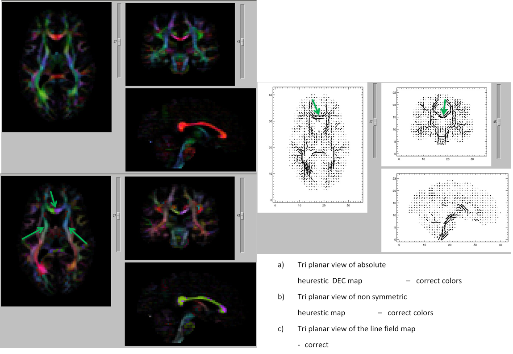

11. STEP 4:QUALITY ASSESSMENT¶
After the data is processed it is important to pay attention to certain artifacts that should be checked for before tensor fitting the data. You can perform the visual checks in DIFFCALC. DIFFCALC for the moment has not been modified from its old IDL format. Since we would want to use the robust and well established methods of DIFFCALC module computing, for the moment we are introducing a Convertor that will convert the new list file to old format. ._OF.list will be appended at the end of list file being converted. Simply load the .OF.list in DIFFCALC to go through the data.
Note
Please refer the section on DIFFCALC for more details regarding conversion and the paramters output.
Please note that each of the artifacts are categorized into correctable and uncorrectable artifacts, that will require removing the volume or data from your group analysis. The presentation will guide you through identifying most common and few uncommon artifacts and certain remedies in post processing.
11.1. Ghosting¶

- Raw, TORTOISE imported view of the corrupted data
- Directionally encoded color map of the corrupted data
11.2. Ghosting due to fat¶
a b c d
a) Raw DWI with the artifact, b) TR , c) FA , d) DEC map, e) CHI square map The fat ghost (this example in the frontal lobe) can show anisotropic features (as seen in FA and DEC maps) and can alter your results. Therefore is important to keep note of datasets affected by such artifacts and use caution when interpreting results, especially in the affected areas.
11.4. Averaging at the scanner artifact¶
- Averaged replicates with the 8th DWI showing reconstruction artifact(c)
- Resulting tensor fitting from corrupted data due to the lack of additional uncorrupted volumes.
11.5. Signal scaling artifact¶
- a)first replicates with different signal gain then the rest of the replicates
- first replicates with different signal gain then the rest of the replicates
11.6. Slice dropuout due to motion¶
- All slice view of the volume affected by signal dropout. b) sagittal view of the volume
Remedy: The slice dropout due to motion is correctable in post processing either by removing the affected volume or by using RESTORE tensor fitting algorithm. For both these solutions, it is important that your data has enough number of volumes to account for the loss of data points.
11.7. example of correction stages to remedy signal dropuout artifact in DIFFCALC¶
11.8. Interslice motion artifact¶
*a) All slice view of volume affected by interleave motion.
*b) sagittal view of the corrupt volume
11.9. DEC map output including and excluding the corrupt volume¶
Note
The arrows, inserted by author, points to the artifactual and corrected regions that are clearly seen on the DEC map.
- Left: DEC map of data with the corrupt volume. Red arrow shows the residual uncorrected data points.
Remedy: If you notice volumes affected by these interslice motion artifacts, please remove the corrupt volume before performing tensor fitting.
- Right: DEC map of data after the corrupt volume is removed. Green arrow shows a cleaner map.
11.10. Cardiac pulsation artifact¶
- All volume view at the level of brain stem showing the cardiac pulsation artifact.
- Axial slice displaying the cardiac artifact resulting in signal loss at the level of the cerebellum.
11.11. Correction stages for Cardiac pulsation artifact¶
Please note: The arrows, inserted by author, points to the artifactual and corrected regions that are clearly seen on the DEC map.
- Left: DEC map after Non linear tensor fitting without correction.
- Middle: DEC map after RESTORE tensor fitting- artifact removed
- Right:Outlier Map, that is generated when running RESTORE tensor fitting, shows the corrupt data points removed when performing tensor fitting.
11.12. Spike/RF noise artifact¶
b
- All volume view of the dataset showing (circled in red) volumes affected by spike/rf noise artifact.
- DMC data (output from TOROISE processing) reorientes the artifact to present itself diagonally.
11.13. Correction stages for spike artifact¶
- Left: DEC map after Non linear tensor fitting without correction.
- Middle: DEC map after RESTORE tensor fitting- artifact removed
- Right:Outlier Map, that is generated when running RESTORE tensor fitting, shows the corrupt data points removed when performing tensor fitting.
11.14. EPI distortion presentation and correction in traditional, single phase encoded DTI human data¶
- b0 original image
- T2 fat sat structural image AC-PC aligned
- Quadratic corrected image
- Quadratic+elastic corrected image (with bspline correction)
11.15. EPI distortion presenation and correction in 2-way phase encoded DTI human data¶
11.16. EPI disortion presentation and correction in 4-way phase encoded DTI human data¶

11.17. Animal data example: In-vivo ferret dataset with extreme disortions¶
11.18. Data import errors: viewable in DIFFCALC GUI¶
Note
green arrows= correct, red arrows= incorrect.
Wrong Import

Correct Import
